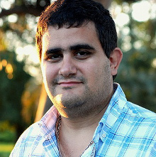

techMeetup UY es una conferencia anual creada para y por desarrolladores de Uruguay.
techMeetup UY tiene 3 objetivos principales: potenciar comunidades locales, impulsar a los estudiantes de IT y ofrecer un día de actualización profesional y networking de la más alta calidad. Está dirigida a todo el sector IT de Uruguay: CTOs, IT Managers, responsables de IT, estudiantes y todos los profesionales IT.
Presenta tu charla
Apoya la conferencia
techMeetup UY es una conferencia sin fines de lucro. Todos los fondos utilizados en la organización de la conferencia son proporcionados por empresas que creen firmemente en este tipo de eventos. Más de 20 empresas apoyaron este proyecto en la edición anterior (+).
Si te interesa apoyar este proyecto lo puedes hacer de la siguiente forma:
Nuestro equipo
-

Nicolás Bianchi
Cras justo odio, dapibus ac facilisis in, egestas eget quam. Donec id elit non mi porta gravida at eget metus. Nullam id dolor id nibh ultricies vehicula ut id elit.
-

Martín Cabrera
Cras justo odio, dapibus ac facilisis in, egestas eget quam. Donec id elit non mi porta gravida at eget metus. Nullam id dolor id nibh ultricies vehicula ut id elit.
-

Martín Loy
Cras justo odio, dapibus ac facilisis in, egestas eget quam. Donec id elit non mi porta gravida at eget metus. Nullam id dolor id nibh ultricies vehicula ut id elit.
-

Ignacio Nin
Cras justo odio, dapibus ac facilisis in, egestas eget quam. Donec id elit non mi porta gravida at eget metus. Nullam id dolor id nibh ultricies vehicula ut id elit.
-

Diego Sapriza
Senior Software Engineer para Case Design Inc. Co-organizador de varias meetups: PHPmvd, DevOps, AgileUY.